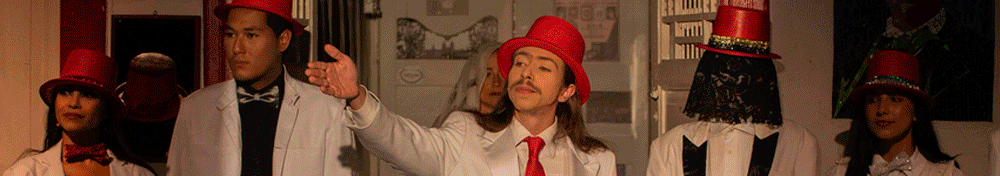
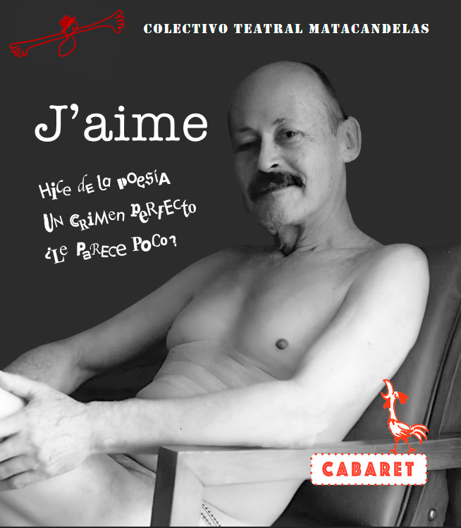
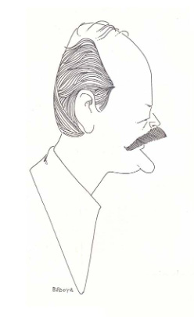

Información: (+57) 350 215 11 00 (WhatsApp)

Cabaret
J'aime
Hice de la poesía un crimen perfecto, ¿le parece poco?
Un cabaret sobre la palabra, la poesía y la música. El verbo performa, engendra materia, detona la imaginación. La palabra es una fiesta del cuerpo.
“Desde sus orígenes, la poesía está muy emparentada con el teatro y muchos poemas se prestan para ser escenificados, así como otros para convertirse en canciones. En esos casos, el autor debe dejar completa libertad de interpretación a quienes asuman ese trabajo, autorizándolos para efectuar en los textos
los cortes o modificaciones a que haya lugar por motivos de eufonía, vocalización, tiempo, o requerimiento de la composición musical.”
Declamación lectura pública. Método fácil y rápido para ser poeta
 |
|
LA POESÍA EN ESCENA
Por: Jaime Jaramillo Escobar
Sinopsis de media conferencia en el Teatro Matacandelas
Medellín, 3 de septiembre de 2009.

La existencia de la poesía está registrada históricamente desde hace cinco mil años, en castellano desde el siglo XII, y la futurología prevé su continuidad porque la verdadera poesía es canto, y el canto es la más bella y general expresión de la naturaleza humana.
La poesía es más para vivirla que para escribirla, y se revive cuando se lee y se recuerda. Escribirla es un resultado. Primero hay que vivirla. Si no es así, aparece la falsa poesía: bagazo retórico. El pretendido poeta redacta. Nada de emoción. Nada que conmueva. Nada de poesía.
La antipoesía no existe. No es más que un rótulo comercial. Lo que sí existe son muy diversas clases de poesía, ya que se trata de un género indeterminado. Ninguna definición las abarca a todas, por lo cual se dan tantas definiciones como formas de poesía se pueden contar, según la apreciación de cada tratadista.
Si el texto poético amerita leerlo, el motivo es el mismo que asistir al teatro. El vínculo de la poesía con el teatro consiste en que su cabal comprensión depende de la forma de la lectura, como el parlamento de un actor depende del complejo arte de su interpretación. En la deficiente lectura el poema se pierde. Comparándolo en diferentes voces se tiene la evidencia.
El género literario más común en el mundo es la poesía, por su parentesco con el relato. Por ser insobornable, por expresar sentimientos, por su versatilidad, por su poder de síntesis y su facilidad de comunicación, por su capacidad de permanencia, y por saber deslizarse por aduanas y censuras. Cualidades que la hacen invencible en la memoria colectiva y en las páginas de la historia, apareciendo inesperadamente para sorpresa del tiempo en los más insólitos lugares.
En el teatro, el circo, el cabaret, en todos los lugares donde se canta y se danza bajo el imperio de la música, la inspiración poética da sentido a la vida, fraternidad a la convivencia, alegría al corazón. En un espectáculo, en un baile, cada uno goza de todos los demás, anota Baudelaire.
Si el mundo es un producto de la suprema inspiración divina, inspirados nacemos para bailar y reír, abrazarnos y lanzar los sombreros al aire. Aquí en el Matacande las sabemos hacer de la vida una fiesta, se trabaja con alegría, nos atrevemos a ser dichosos en cualquier circunstancia, y por eso podemos brindar espectáculo y regocijo a la ciudad, llueva o truene, pues mientras mayores sean los contratiempos, con mayor urgencia se necesitan los placenteros momentos que proporciona el teatro.
Ninguna ciudad carece de teatro, porque una ciudad sin teatro sería la ciudad más aburrida del mundo, y ninguna ciudad quiere ser la más aburrida del mundo. Los actores son nuestros amigos que nos proporcionan el encanto de la fantasía, nos divierten en la comedia y nos confrontan con la dramática realidad, a la que es imposible sustraerse. En el Matacandelas, tanto el gran teatro como el ligero esparcimiento del vodevil hacen que los días sean más llevaderos y amables, y que nos sintamos herederos, no sólo de antiguas culturas, sino también de la tradición local, que cuenta con un notable historial en las artes escénicas.
El teatro y la poesía van siempre juntos desde sus orígenes. “La vida es representación”, anota Fernando González, y agrega: “el hombre es cómico”. Sólo una sociedad que ríe de sí misma tiene la posibilidad de corregirse. A eso vienen el teatro y la poesía. Del hombre serio y trascendental que nunca ríe, como las bestias, todas las tropelías se pueden esperar.
Son la música y el canto los que ponen una nota de felicidad en la vida. Cuando empieza la música, de inmediato todo se transforma por la vibración del aire. El que estaba sentado salta, las piernas empiezan a moverse solas, aflora la sonrisa, y en ese momento el hombre se olvida de todos sus males, porque la música lo transforma. En un pueblo isleño del Pacífico Sur las almas de los que fallecen se reúnen con otra isla, donde pasan los días durmiendo y las noches cantando y bailando. La bienaventuranza concibe como un palacio de música celestial: los ángeles portan laúdes, arpas y flautas. No puede haber fiesta sin música. La música canta la gloria del mundo. Hasta los peores criminales y los enfermos mentales se apaciguan cuando suena la música, porque la música es el más sublime de los inventos humanos.
En los miles de años que lleva el teatro representando la condición humana, muchas cosas han pasado al olvido, menos el teatro. Dio vida al cine, y fue el primer arte que reunió en sí a todas las demás artes. El teatro se escribió en verso durante siglos, no porque el teatro tomara el verso en préstamo a la poesía, sino porque la poesía y el teatro son unívocos, tienen la misma naturaleza.
* Incluida en el tomo II de Método fácil y rápido para ser poeta. Luna Libros